Phiếu trạm đo
Điền số lượt được phân công và giữ số đo thô, kể cả khi khác dự báo.
STEM 2026–2027 · TOÁN 8
Bóng thấp hơn khung vẫn có thể tràn ra ngoài. Dùng tam giác đồng dạng để đoán cả hai mép bóng, rồi lắp, đo và thử lại để kiểm chứng.
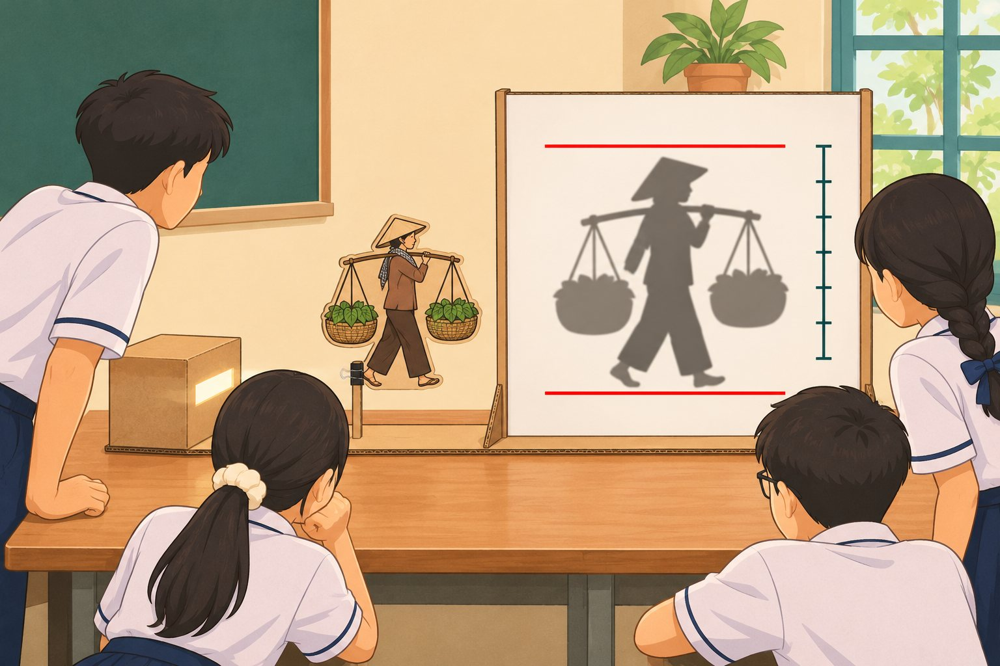
Dành cho học sinh
TRƯỚC BUỔI HỌC · 5–10 PHÚT
Chọn một nhân vật em muốn kể chuyện. Em chỉ cần mang bản phác, nếu đã làm; không cần tự chế tạo sân khấu, cài ứng dụng hay tạo tài khoản ở nhà. Trong lớp có thẻ chuẩn để đo.
Phác một hình dễ nhận ra. Chừa đoạn phẳng ở đỉnh và đáy, cùng một tai ở cạnh bên để kẹp.
Vẽ tia từ tâm khe sáng qua đỉnh, đáy của vật. Dùng tam giác đồng dạng và ghi dự báo trước khi đo.
Kiểm vị trí hộp đèn, thẻ và màn theo thước trên mặt đế. Tắt đèn khi đổi cấu hình.
Đọc hai mép của bóng trên thước dọc. Mép rõ ghi [x; x]; nếu nhòe ghi [số nhỏ; số lớn].
Chọn một thông số để đổi, giữ các yếu tố còn lại như cũ. Dự báo mới trước khi đo lại.
Nói rõ đâu là dự báo, đâu là số đo. Dùng cả hai khoảng mép để kết luận và giải thích nếu có sai lệch.
Điền số lượt được phân công và giữ số đo thô, kể cả khi khác dự báo.
Tải tệp để mở trong Scratch, sau khi đã ghi dự báo. Phần mềm mô phỏng theo công thức, không phải dữ liệu thực nghiệm.
Tải mô phỏng cho học sinh (.sb3)Dành cho giáo viên
Ở hoạt động kiểm chứng ngắn, cho học sinh xem một nhận định về bóng sau khi các nhóm đã nộp dự báo. Yêu cầu kiểm bằng hai mép, nêu giới hạn của nhận định và giải thích vì sao không cần gửi thông tin nhận diện học sinh cho công cụ AI. Chỉ gọi đó là phản hồi AI nếu có phản hồi thật, lưu rõ nguồn; nếu không, ghi là tình huống giả định. Scratch chỉ tính theo mô hình.
Kiểm tra bốn việc: dự báo đúng thời điểm; lắp và đo đúng lượt được giao; lưu cả số chưa khớp; kết luận dựa trên hai mép và chỉ thay một thông số khi thử lại. Ảnh AI, số mô phỏng hay dự báo không phải minh chứng của buổi dạy thử. Khi lưu ảnh thật, ưu tiên dụng cụ, tay thao tác và sản phẩm không nhận diện người học.
Hình dung cả quá trình
28 tranh minh họa tạo bằng AI để hình dung quy trình, không phải ảnh dạy thử, kết quả đo hoặc bản vẽ đúng tỉ lệ. Khi giải thích hình học hoặc cách đọc mép, dùng các sơ đồ chuẩn.
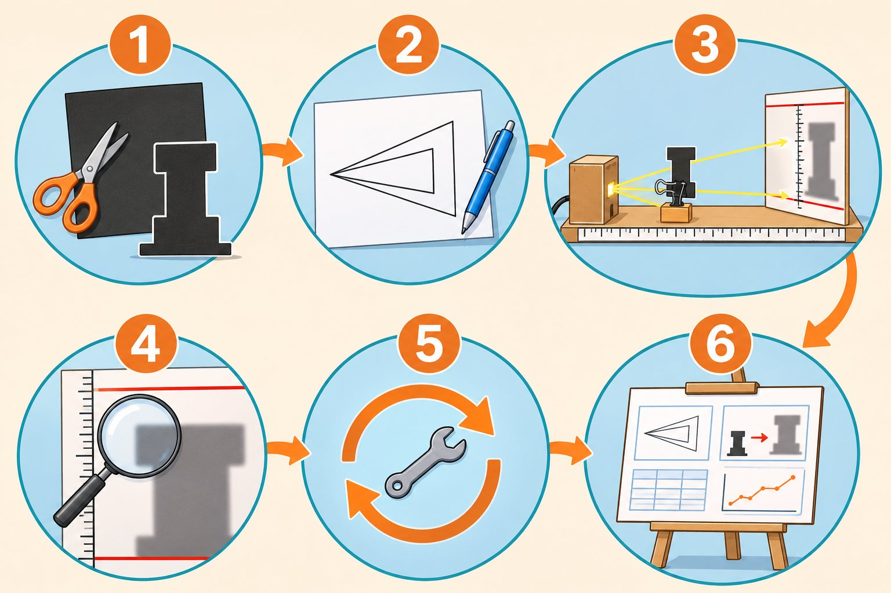
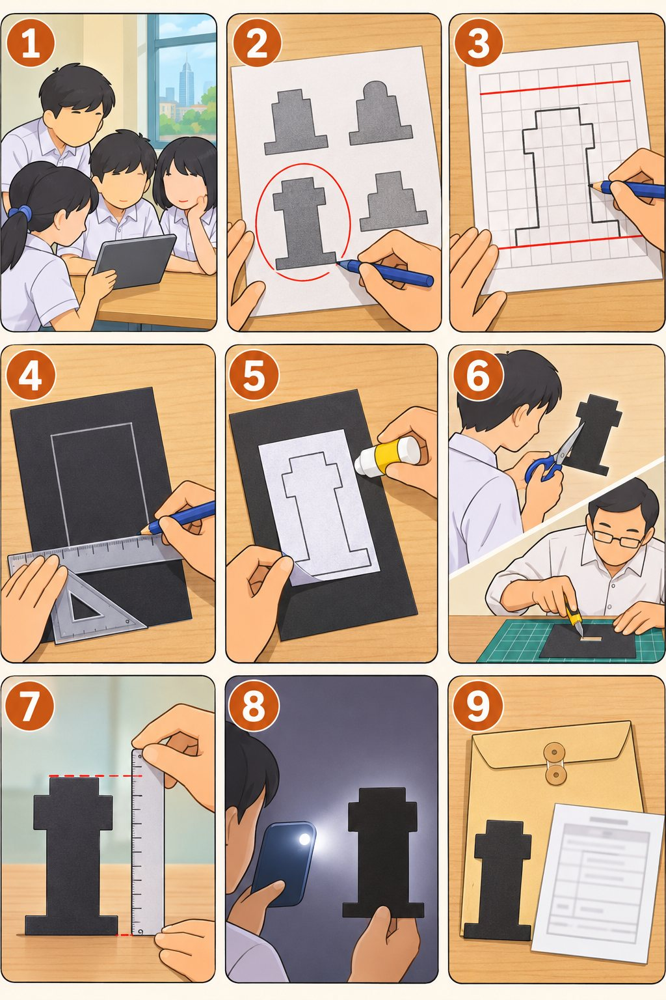


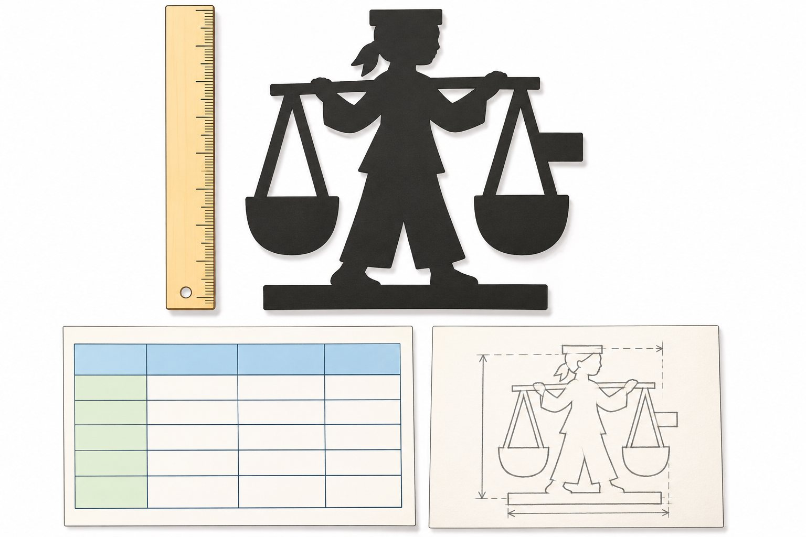

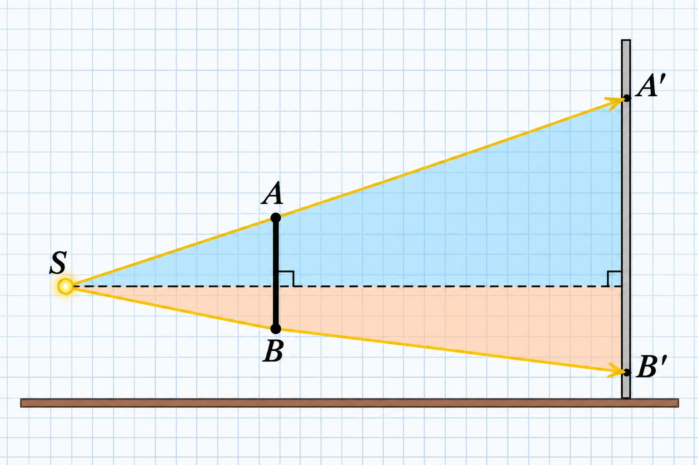
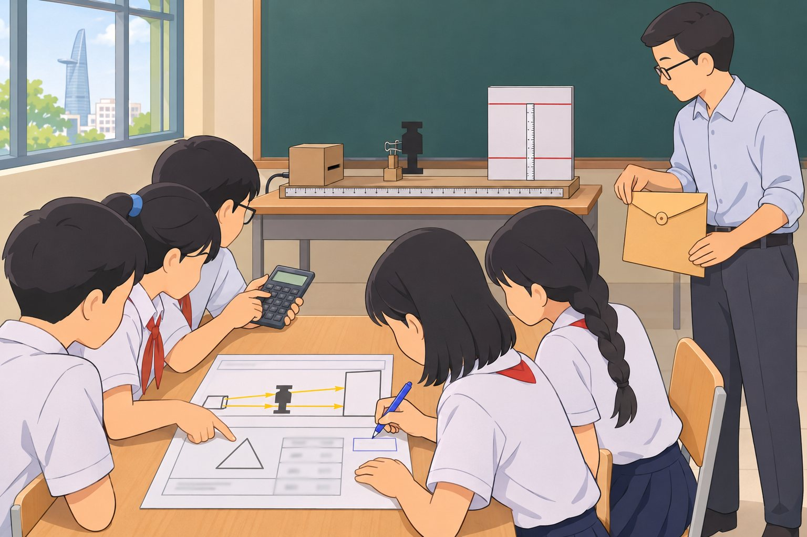

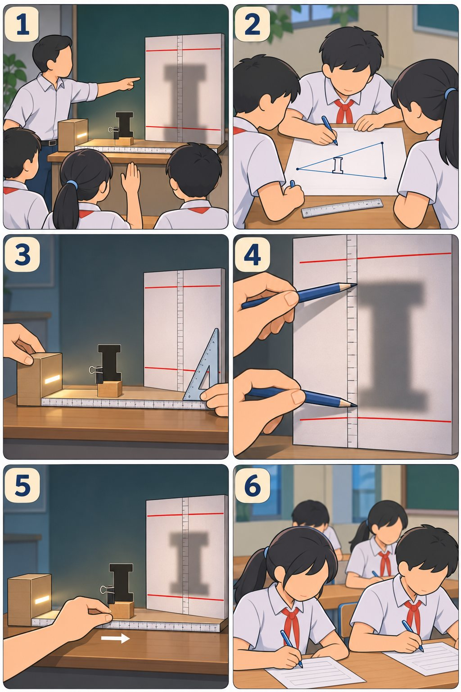
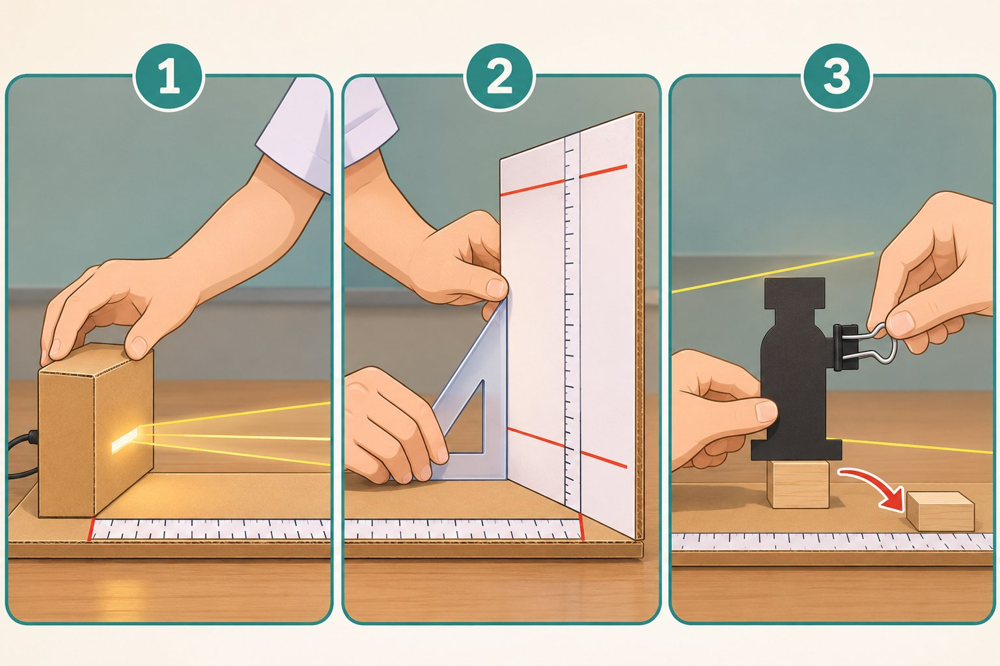
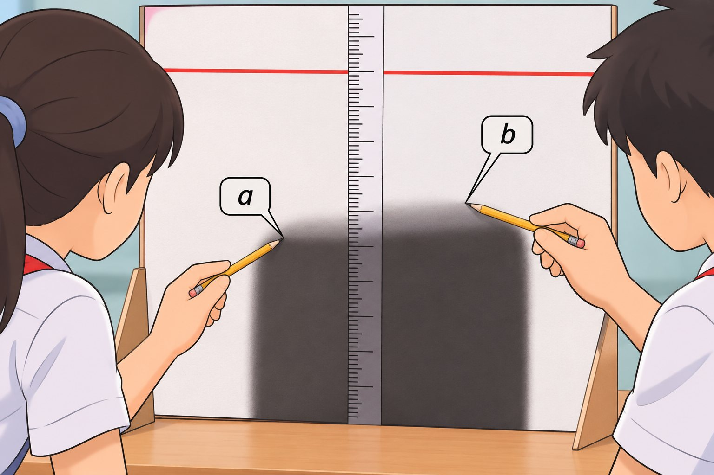
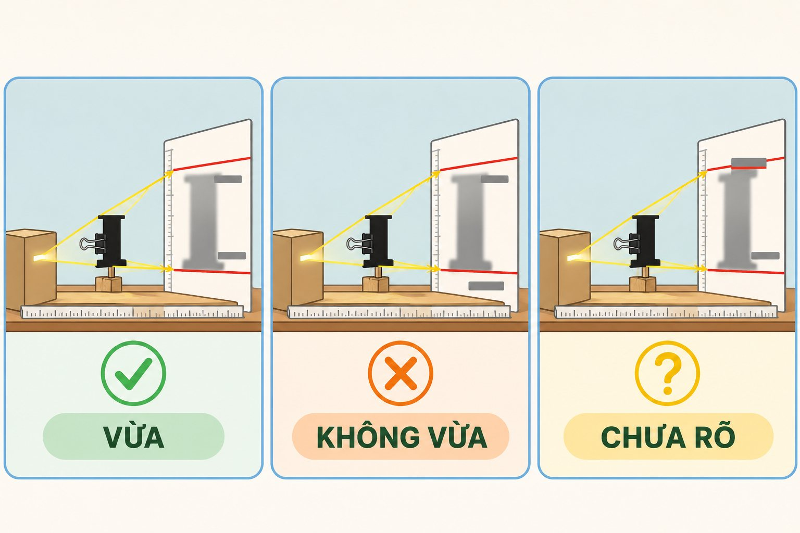
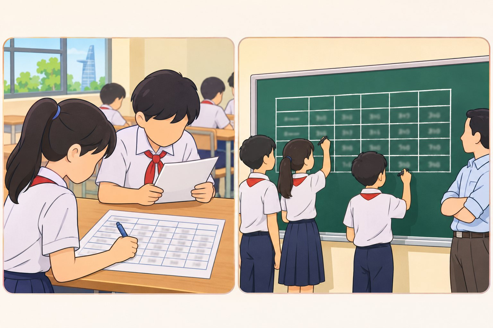